Arch'ocktail
Arch'ocktail
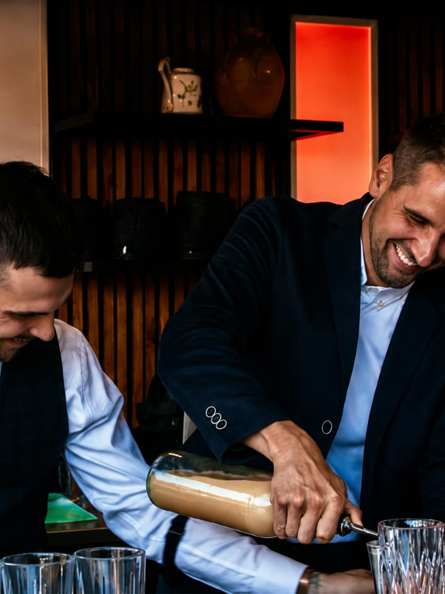
Arch'ocktail est un duo de deux frères mixologues.
Maison de mixologie et de conseil bar, ils pensent chaque cocktail comme une expérience sensorielle haut de gamme, conçue, dosée, éprouvée.
Ils se présentent comme des architectes d'émotions :
leurs recettes sont composées avec la rigueur d'un plan et la précision d'un dessin technique, mais toujours au service d'un ressenti : le geste et la sensation avant la formule.
- Année
- 2025
- Client
- Arch'ocktail
- Disciplines
- Identité visuelle, Direction artistique, Typographie
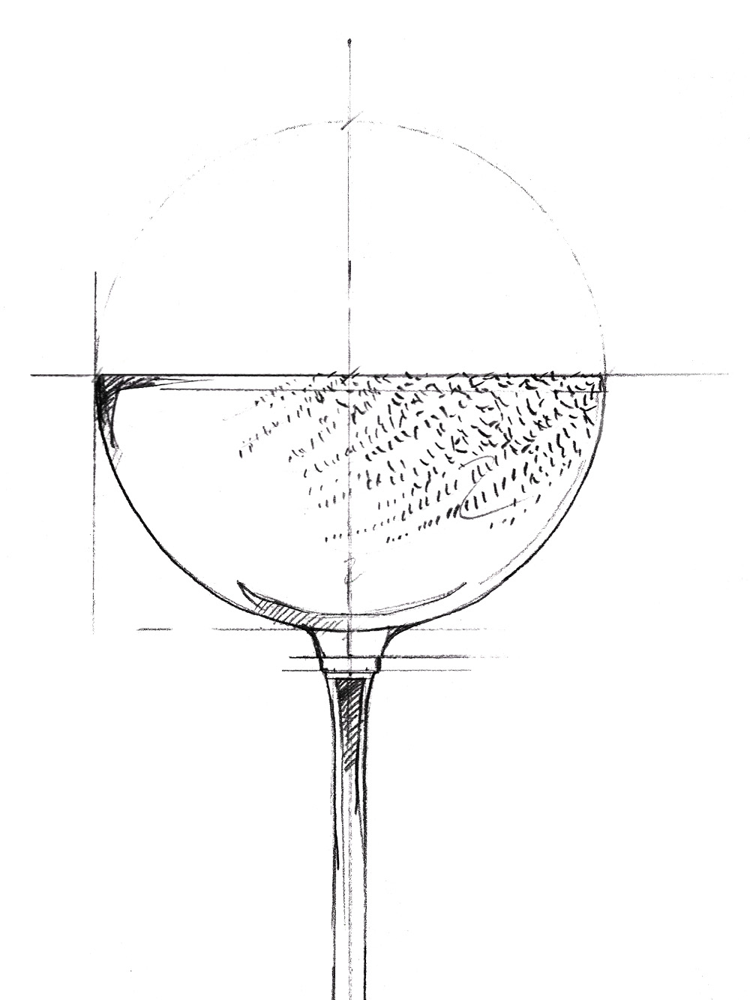
Architecte d'émotions
La direction artistique fusionne les deux mondes qui donnent son nom à Arch'ocktail : celui de l'architecte et celui du mixologue.
L'identité puise dans le vocabulaire du bâtisseur :
cartouches, cotations, échelles, dessins techniques.
Chaque cocktail est traité comme un projet : esquissé au trait, coté, équilibré selon quatre axes (force, douceur, amertume, acidité), puis reproduit à l'identique.
L'émotion se construit à deux niveaux.
Dans la trame graphique d'abord : le noir et blanc, la ligne fine et la tache de couleur brute au feutre réintroduisent le geste, la main, l'accident.
Dans l'iconographie ensuite : les visuels des cocktails, cadrés serrés sur la matière, la lumière et la texture, font sentir le verre avant de le nommer.
Un cocktail comme une œuvre : à la fois calculée et sensible.
La direction artistique fusionne deux mondes : celui de l'architecte et celui du mixologue. L'identité puise dans le vocabulaire du bâtisseur : cartouches, cotations, échelles, dessins techniques.
Chaque cocktail est traité comme un projet, équilibré selon quatre axes (force, douceur, amertume, acidité) puis reproduit à l'identique. Un cocktail comme une œuvre, à la fois calculée et sensible.
Deux typographies portent cette tension : l'Injurial (Sandrine Nugue, 205TF), lapidaire, aux empattements taillés en pieds de verre, et l'Auger Mono (Signal), chasse fixe d'atelier. Pierre et plan, geste et trait.
La Typographie
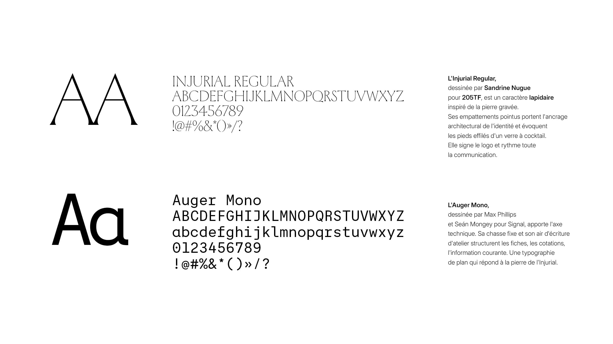
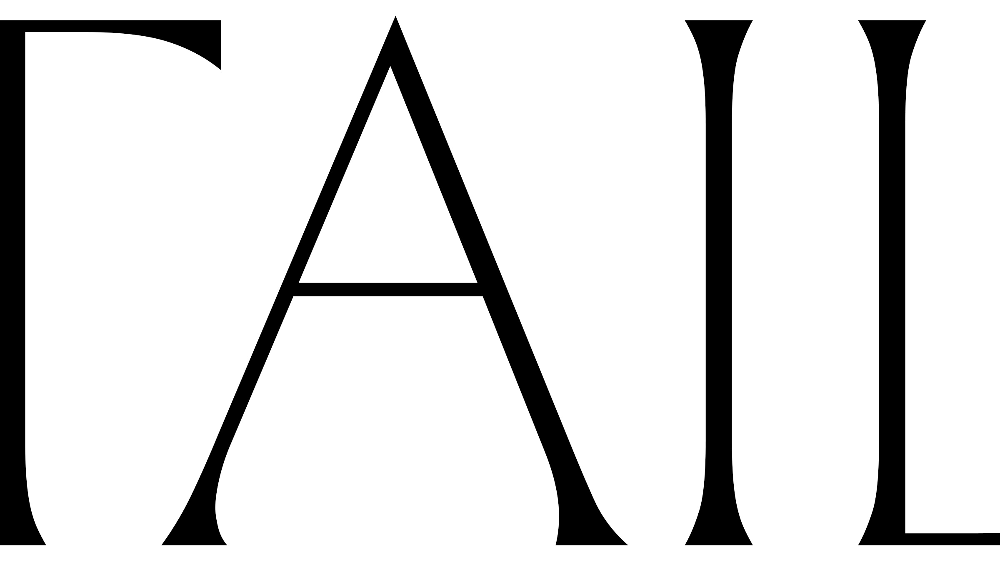
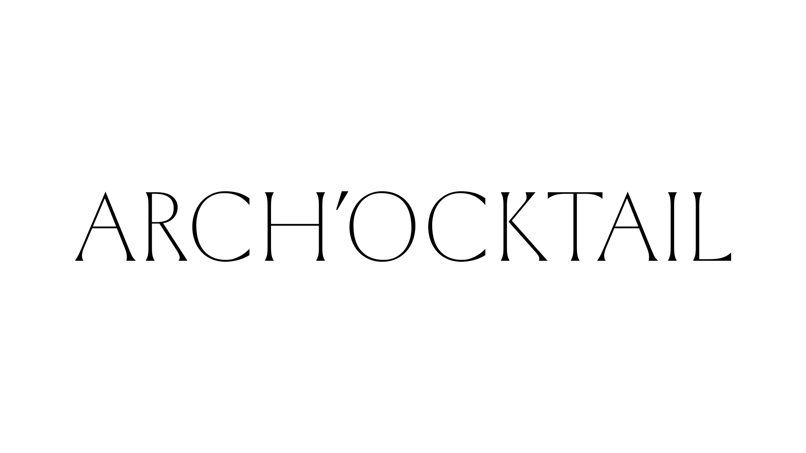
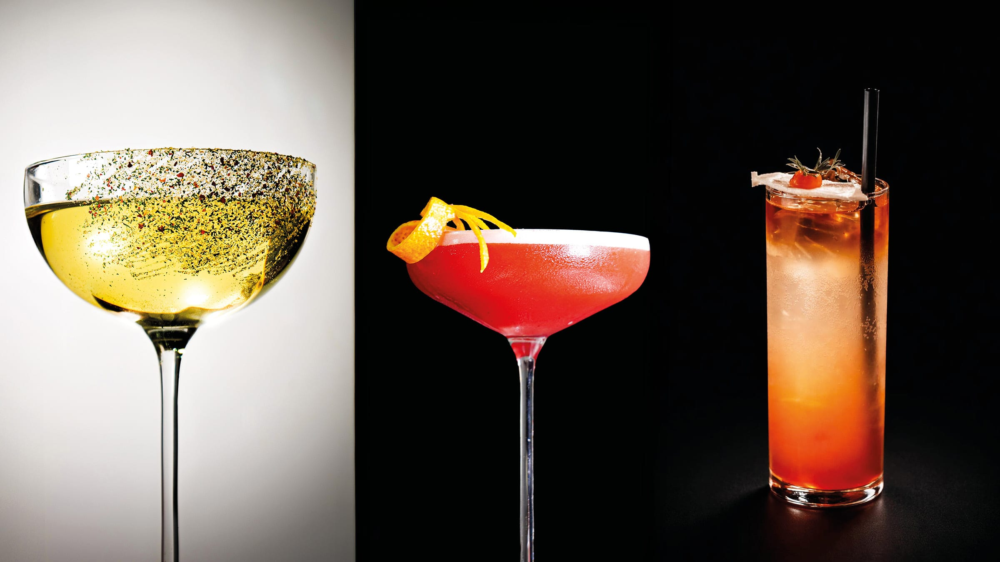
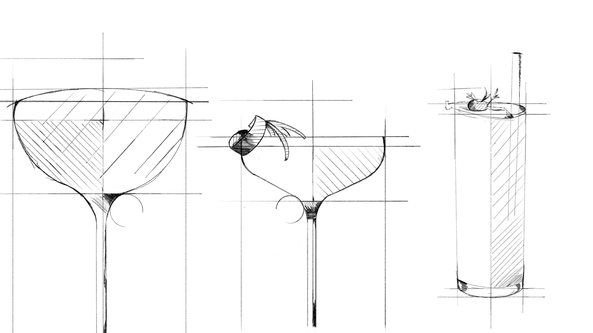
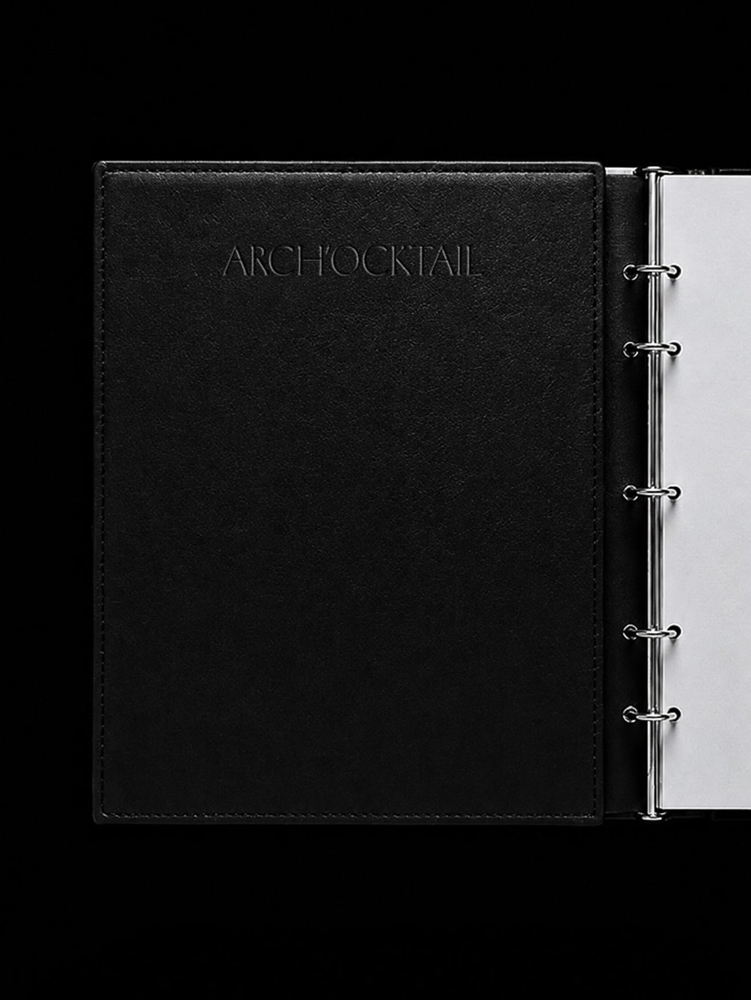
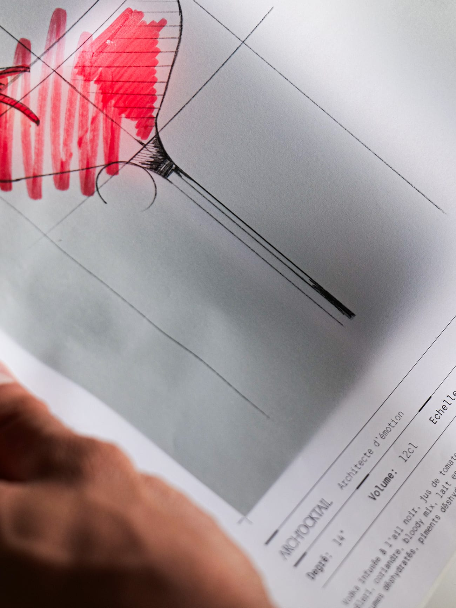
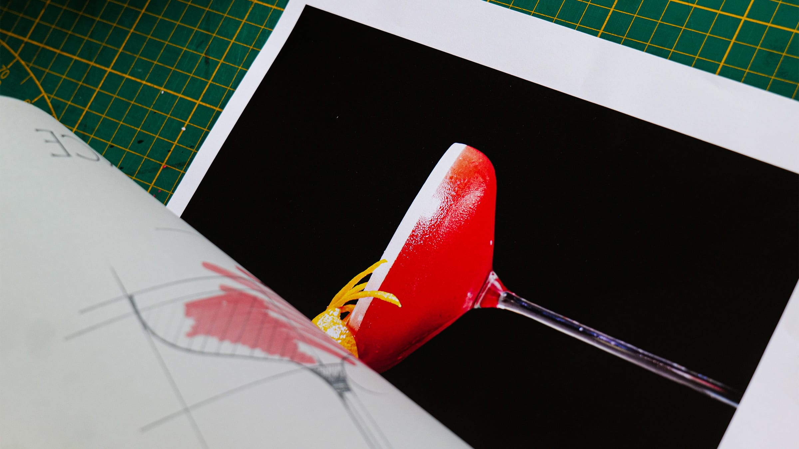
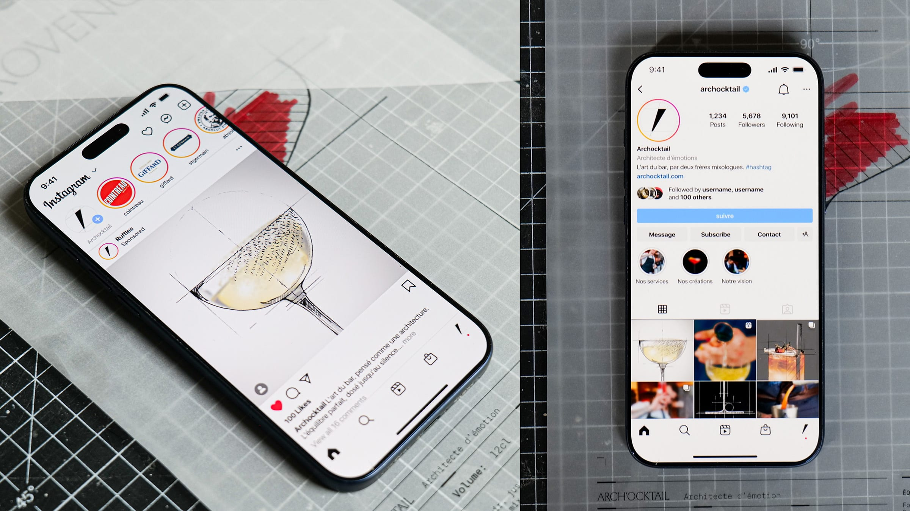